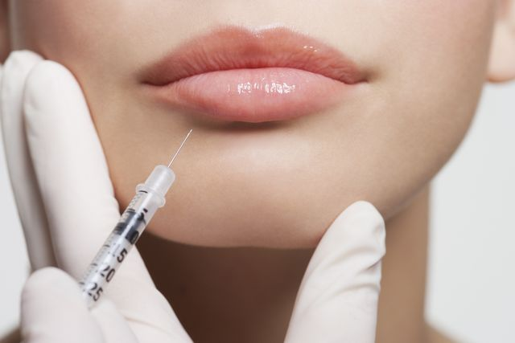
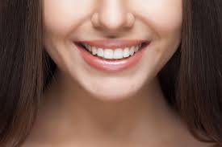
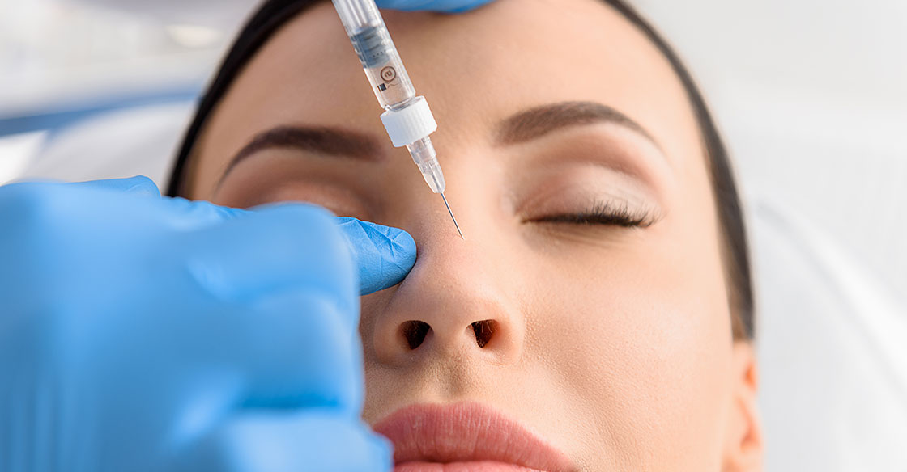

Botox is a drug doctors have been using for years to treat wrinkles and facial creases.
Botox is a brand name of a toxin made by the bacterium Clostridium botulinum. There are other brands, such as Dysport and Xeomin.
Botox is the term you hear most often because it was the first injectable botulinum toxin.

Dermal fillers, sometimes called soft tissue fillers,
are substances designed to be injected beneath the surface of the skin to add volume and fullness.
Substances used in dermal fillers include: Calcium hydroxylapatite,
which is a mineral-like compound found in bones.

Veneers appear to be the new fad amongst millennials who are looking to enhance their smile quickly.
Instead of waiting months to a year wearing braces, this dental
cosmetic procedure allows dental patients to have straight teeth much sooner.
Mesotherapy is a technique that uses injections of vitamins,
enzymes, hormones, and plant extracts to rejuvenate and tighten skin,
as well as remove excess fat.

Nasal botox is used as a non-surgical option for nasal wrinkles removal and nasal
tip lifting. It is made by injecting with toxin needles on the nose.
It is also effective in reducing and removing wrinkles on the nose,
which appear due to mimics, especially after smiling.